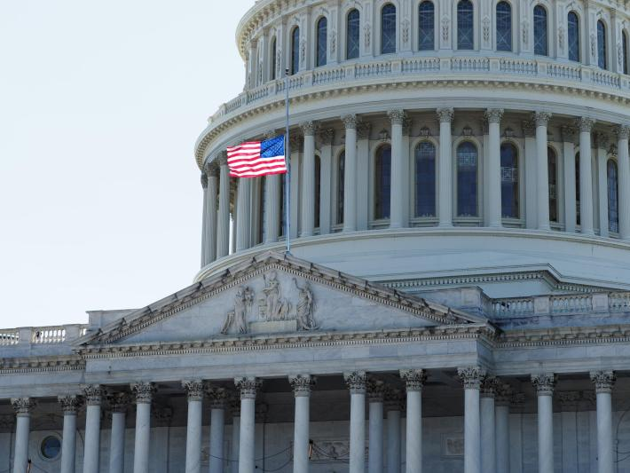

Dr. Tanya Berger-Wolf to serve on the National Academies Board on Life Science.

As the Imageomics Institute moves closer to building out its third year, Dr. Tanya Berger-Wolf will be adding a new appointment to her endeavors: Board of Life Science.
We are proud to announce Dr. Berger-Wolf's appointment to the esteemed National Academies of Sciences, Engineering, Medicine’s Board on Life Sciences! Beginning July 1, she will join other experts in efforts to advise national policy.
The National Academies of Sciences, Engineering, and Medicine was created to advise the nation. It provides independent, objective advice to inform policy with evidence, spark progress and innovation, and confronts challenging issues for the benefit of society. The Board on Life Sciences (BLS) was created in 1984 to serve as the focal point for exploring critical, emerging policy and technical issues associated with the life sciences and biotechnology research and their applications. The BLS engages experts, across the United States and internationally, that represent a wide range of scientific and technological disciplines, who also work in a diversity of life science and biotechnology-related fields. These experts also range from government, academia, industry, and other non-governmental organizations.